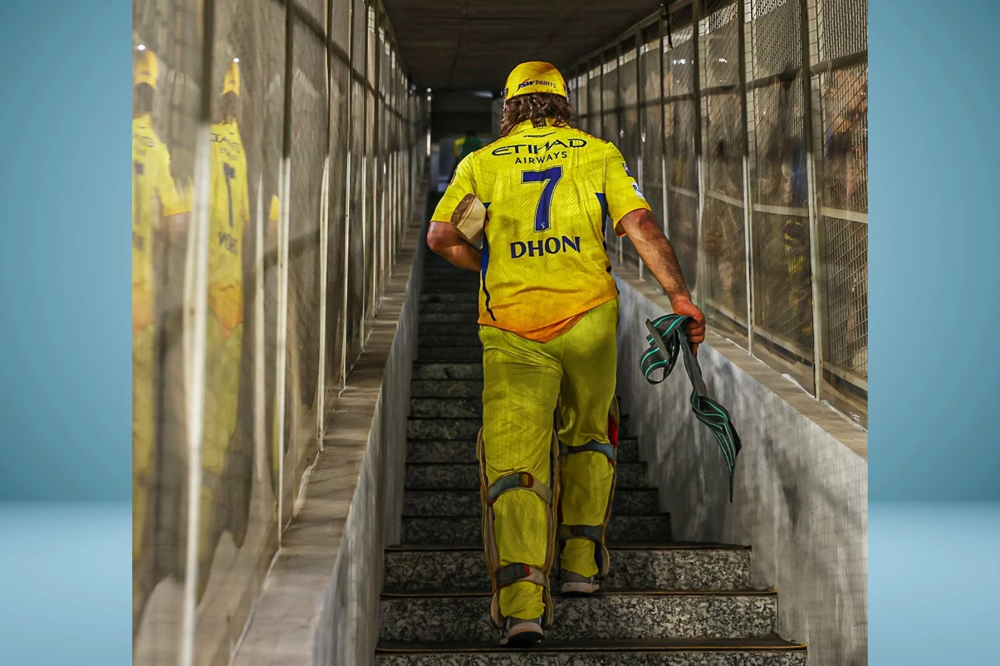
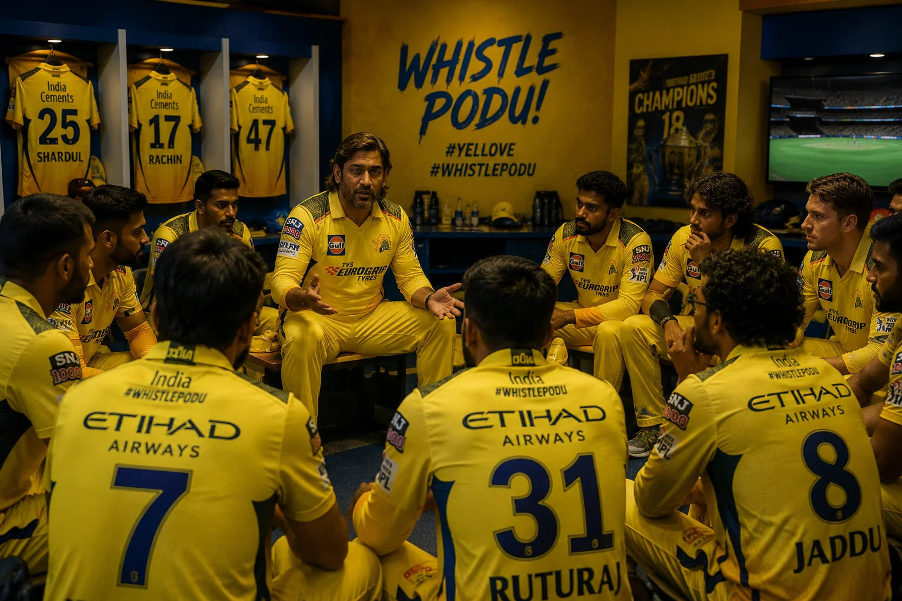

The Last Walk
He didn't tell anyone. That's the part that gets to you when you really think about it.
MS Dhoni walked off a cricket field for the last time in an IPL match in 2024, and he did it the way he'd done everything for the previous two decades: without making it about himself. No press conference beforehand. No emotional social media post. No "I have an announcement to make." He just played the game, walked off, and let the silence speak for itself.
Millions of people watched that match. Not one of them knew for certain they were watching his last. There were rumours, of course. There are always rumours with Dhoni. Every season since 2020 has been "Dhoni's last season." Every tournament has been "the farewell." But Dhoni never confirmed anything, never denied anything, and never gave the world the dramatic goodbye that it desperately wanted from him.
Because that's who he is. The man who retired from international cricket at 10:37 PM on a Saturday night with an Instagram post. No interview. No ceremony. Just a photo slideshow set to a sad song, uploaded while most of India was getting ready for bed. If you think he was going to give the IPL a more dramatic exit than he gave India, you don't know Dhoni at all.
Sixteen Years of Yellow

The 2008 IPL auction. The very first one. Nobody knew what anything was worth. Nobody knew how this experiment would turn out. And in the middle of all that uncertainty, Chennai Super Kings bought MS Dhoni for ₹9.5 crore, making him the most expensive player in that inaugural auction.
Think about what happened between that moment and his last match. Sixteen years. Five IPL titles. More playoff appearances than any other franchise. A fan base so devoted that CSK didn't just become a cricket team — it became a cultural identity for an entire city. The yellow jersey became Chennai's second skin. And at the centre of all of it, holding the whole thing together with those giant gloves and that impossibly calm face, was one man.
Dhoni didn't just play for CSK. He was CSK. The franchise's identity, its culture, its approach to cricket, its recruitment philosophy, its calmness under pressure — all of it was built in his image. Other franchises changed coaches, captains, strategies, and identities every few years. CSK never needed to. They had Dhoni, and Dhoni was enough.
Even during the two-year ban from 2016-2017, when CSK was suspended and Dhoni played for Rising Pune Supergiant, it felt wrong. Like watching someone wear the wrong colour. When CSK returned in 2018, Dhoni returned with them, and they immediately won the title. Because of course they did.
MS Dhoni was bought for ₹9.5 crore in the first-ever IPL auction in 2008 — the highest price paid for any player. Over 16 seasons, he led CSK to 5 IPL titles (2010, 2011, 2018, 2021, 2023), making him the most successful captain in IPL history.
The Dressing Room After
The cameras show you the field. They show you the celebrations, the trophies, the lap of honour. What they don't show you is what happens after the broadcast ends and the stadium empties and the dressing room door closes and it's just the team, sitting together, knowing that something fundamental has changed.
Teammates who played with Dhoni in his final seasons have described what those last moments felt like, and the common thread in every account is the same: Dhoni didn't cry. Everyone else did.
Ravindra Jadeja, who spent over a decade bowling to Dhoni's tactical instructions, who was elevated from a good player to a great one partly because Dhoni knew exactly how to use him, could barely get through his post-season interviews without his voice breaking. The bond between those two went beyond cricket. It was built on thousands of overs of shared understanding, on knowing exactly where the other person would be without looking.

Dhoni, reportedly, kept things light. Cracked jokes. Made sure nobody got too emotional. Treated the whole thing like it was just another day in the dressing room, another match done, another season finished. That's the Dhoni defense mechanism that the world has watched for twenty years: when the moment gets too big, make it small. When the emotion gets too heavy, make it light. When everyone around you is falling apart, be the one person who holds it together.
It's beautiful and heartbreaking in equal measure, because you know that behind that calm exterior, the man is processing the end of something that defined his entire adult life. But he'll never let you see that. Not on camera. Not in the dressing room. Maybe not ever.
The Successor Who Wasn't Ready
The hardest part of any succession plan is that nobody is ever truly ready to replace an irreplaceable person. And that's exactly what happened at CSK.
Ruturaj Gaikwad inherited the captaincy, and he inherited it the way you'd inherit a house that's too big for you. Every room reminds you of the previous owner. Every decision you make gets compared to what the previous owner would have done. Every time something goes wrong, someone in the stands or on Twitter says what everyone is already thinking: "Dhoni would have handled this differently."
CSK finished 8th in IPL 2026. Their worst-ever result. And while nobody blamed Gaikwad directly — the problems were deeper and more structural than one man could fix — the comparison hung over the season like a cloud that wouldn't move. Dhoni's CSK never finished below 4th unless something extraordinary happened. Under Gaikwad, they crumbled.
That's not Gaikwad's fault. It's just the impossible mathematics of replacing MS Dhoni. You're not replacing a player. You're replacing a twenty-year emotional relationship between a man and a city. Good luck doing that in two seasons.
Why Dhoni Never Wanted a Farewell
There's a school of thought that says Dhoni deserved a grand farewell. A final match at Chepauk with 40,000 fans singing his name. A guard of honour from the opposition. A speech from the franchise owner. A ceremony with highlights playing on the big screen and former teammates flying in from around the world to say goodbye.
Dhoni could have had all of that. CSK would have organized it in a heartbeat. The BCCI would have supported it. Every franchise in the IPL would have participated. The fans were desperate for it. The infrastructure for the biggest farewell in IPL history was sitting right there, waiting to be used.
He said no. Or rather, he just didn't engage with it. He didn't ask for a farewell, didn't plan one, didn't indicate he wanted one. He let each season end the way every season ends — with a last match, a walk off the field, and whatever happens next.
"I don't know if this is the end, and I don't want to know. I'll play if I feel like playing. If I don't, I won't. It's that simple."MS Dhoni's approach to retirement, paraphrased from multiple interviews
That's the most Dhoni statement in the history of Dhoni statements. No drama. No sentimentality. No public emotion. Just a man who has always trusted his own instincts over everyone else's expectations, making one final decision in exactly the way he's always made decisions — on his own terms, in his own time, without asking for anyone's approval.
Virat Kohli will probably have a farewell that shuts down a city. Rohit Sharma will get a send-off that trends on every social media platform on Earth. When their time comes, the world will know months in advance, and the build-up will be enormous. That's how modern cricket works.
Dhoni chose the other way. And somehow, the absence of a farewell became more powerful than any farewell could have been.
Chennai Without Dhoni
Drive through Chennai today and you'll still see Dhoni's face everywhere. On billboards, on auto-rickshaws, on the walls of tea shops, on phone covers being sold by street vendors outside Chepauk. Two years after his last match, the city hasn't moved on. Maybe it never will.
There's a reason CSK's fan base is different from every other franchise in the IPL. RCB fans love their team. MI fans celebrate their team. KKR fans support their team. CSK fans worship theirs. And the object of that worship, for sixteen years, was one man standing behind the stumps with the number 7 on his back.
Chennai adopted Dhoni the way Dhoni adopted Chennai. He wasn't from there. He's from Ranchi, a small city in Jharkhand, about as far from the Tamil Nadu capital as you can get culturally and geographically. But from the moment he arrived, the connection was instant. He learned basic Tamil phrases. He showed respect for the city's culture. He stayed loyal when other players chased bigger contracts or newer franchises. And Chennai, in return, gave him something no other city could: unconditional, permanent, all-consuming love.
That love didn't end when Dhoni stopped playing. If anything, it intensified. Because now there's nostalgia mixed in with the admiration, and nostalgia is the most powerful emotion in sport. Every time a CSK match starts at Chepauk, every time the yellow sea fills the stands, every time a big wicket falls and the crowd instinctively looks towards the dugout expecting to see him, Dhoni's absence is felt as strongly as his presence ever was.
MS Dhoni didn't give Chennai a farewell. He gave them something better. He gave them sixteen years of not needing one. And when the end came, he left the way he always lived: quietly, on his terms, trusting that the people who understood him didn't need a goodbye to know what he meant.
📷 Image Credits: Images via BCCI/IPL/CSK
Frequently Asked Questions
When was MS Dhoni's last IPL match?
MS Dhoni played his last IPL match in 2024 for Chennai Super Kings. He did not make a formal retirement announcement.
Did MS Dhoni have a farewell match?
No. Dhoni did not have a designated farewell match, consistent with his preference for avoiding public drama around personal decisions.
How many years did MS Dhoni play for CSK?
MS Dhoni was associated with CSK for 16 years, from 2008 until his final season in 2024.
How many IPL titles did MS Dhoni win with CSK?
MS Dhoni captained CSK to 5 IPL titles — in 2010, 2011, 2018, 2021, and 2023.
Who replaced MS Dhoni as CSK captain?
Ruturaj Gaikwad succeeded Dhoni. However, CSK finished 8th in IPL 2026 during the post-Dhoni transition.